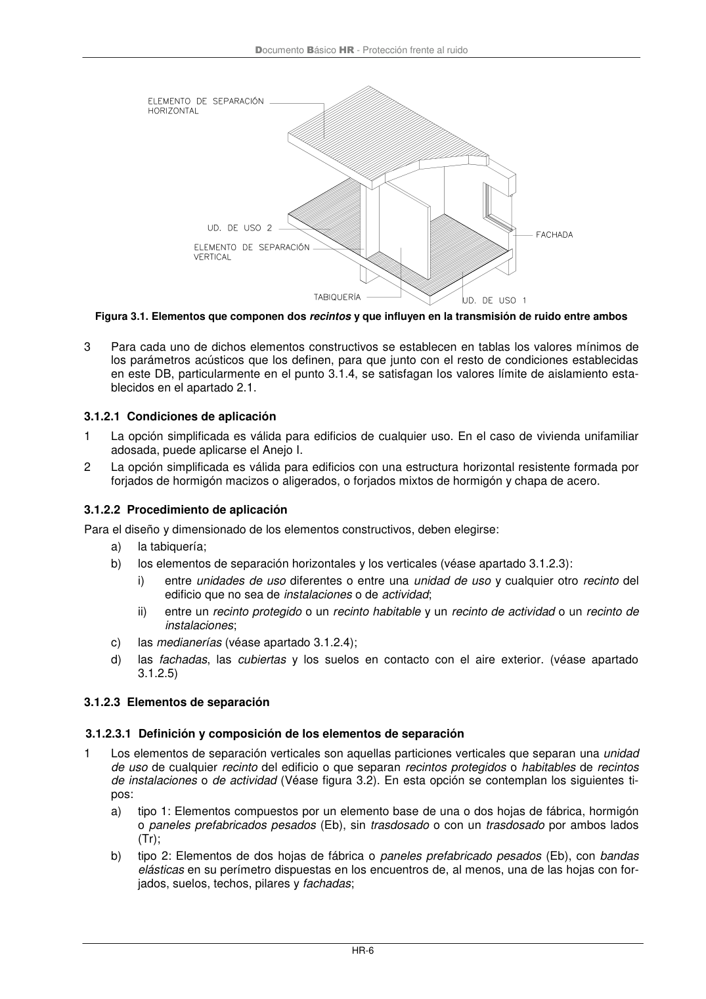

DB-HR · 3.1.2 Opción simplificada: Soluciones de aislamiento acústico · versión 2019-12-20 · capa oficial
Formatos: JSON compacto · Markdown · PDF fuente
Ámbito del documento · texto del ámbito · documento y tablas
ID técnico a0036 · PDF pág. 11-12 · jerarquía no validada por persona · contrastado con el literal de la página 11 (candidato tipográfico); no validado por persona · padre: raíz
3.1.2 Opción simplificada: Soluciones de aislamiento acústico 1 La opción simplificada proporciona soluciones de aislamiento que dan conformidad a las exigencias de aislamiento a ruido aéreo y a ruido de impactos. 2 Una solución de aislamiento es el conjunto de todos los elementos constructivos que conforman un recinto (tales como elementos de separación verticales y horizontales, tabiquería, medianerías, fa- chadas y cubiertas) y que influyen en la transmisión del ruido y de las vibraciones entre recintos ad- yacentes o entre el exterior y un recinto. (Véase figura 3.1). Documento Básico HR - Protección frente al ruido HR-6 Figura 3.1. Elementos que componen dos recintos y que influyen en la transmisión de ruido entre ambos 3 Para cada uno de dichos elementos constructivos se establecen en tablas los valores mínimos de los parámetros acústicos que los definen, para que junto con el resto de condiciones establecidas en este DB, particularmente en el punto 3.1.4, se satisfagan los valores límite de aislamiento esta- blecidos en el apartado 2.1.

PDF fuente redistribuible: copia fiel enlazada en esta página (SHA256 verificado).